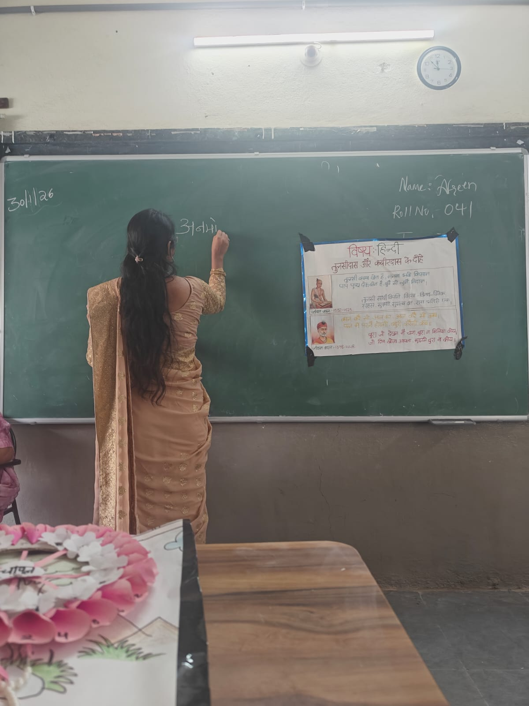
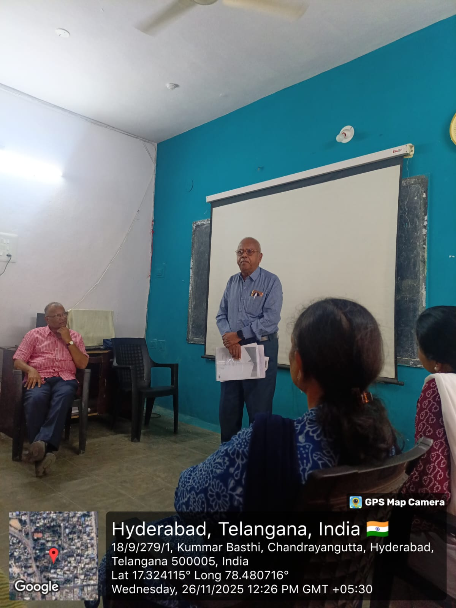

Semester III
Immersive teaching practice, ICT integration, and educational field trips.
Biological Science
Semester III required taking full control of the classroom. I utilized a blend of traditional chalkboard diagramming and modern ICT tools to teach complex physiological and genetic concepts effectively.

Anatomy Diagrams
Live detailing of the human eye structure.

ICT Integration
Digital presentation on genetics.

Problem Solving
Working through genetic crosses on the board.
Classical Hindi Literature
Teaching classical poetry requires translating historical contexts into lessons that resonate with today's students.
I designed custom visual charts to teach the timeless wisdom of "Tulsidas aur Kabirdas ke Dohe". By combining visual aids with vocal recitation, students were able to grasp both the linguistic beauty and the moral lessons of the couplets.


Educational Tours & Community Learning
A complete education extends beyond the four walls of a classroom. During Semester III, I had the opportunity to organize and lead students on interactive ecological study tours and participate in outdoor community learning events.

Botanical Garden Tour
Leading an interactive ecological study tour.

Community Learning
Organizing outdoor educational events.

Collaborative Learning
Engaging with educators and the community.
Educational Tour
Botanical Garden Study Visit
During Semester III, I organized and led students on an interactive educational visit to the Botanical Garden. This excursion gave students hands-on exposure to diverse plant species and ecological concepts outside the traditional classroom environment.
Botanical Garden Tour
Interactive ecological learning with students.
Visiting the Mamidipudi Venkatarangaiya Foundation (MV Foundation)
As part of our field trip and community learning module, we visited the MV Foundation to understand grassroots educational outreach, child rights advocacy, and community-level educational interventions.
Community Engagement
Outdoor educational session at Chandrayangutta.
Cohort Collaboration
Group interaction during the field visit.

Foundation Briefing
Overview of child rights and bridge-course models.

Expert Insights
Addressing educational barriers in underserved communities.

Session Review
Pedagogical strategies and implementation analysis.
Connect the Experience
See how Semester III fits into the complete timeline of my academic development and practical teaching journey.